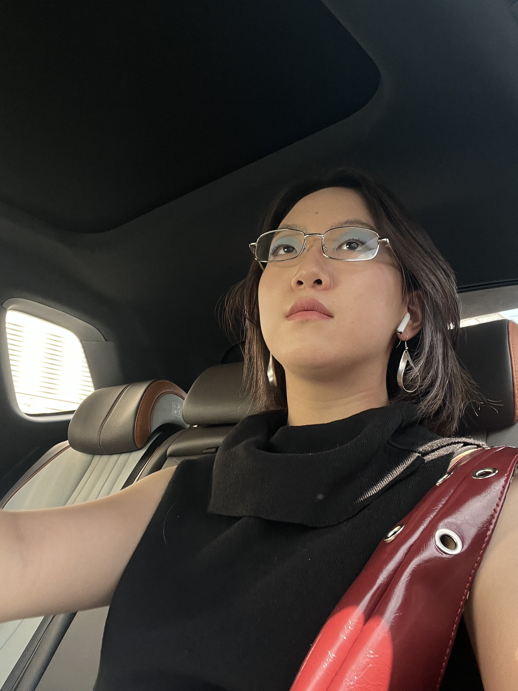

It has been half a year since I arrived in New York.
New York spring is a long season of rain. In damp shoes, slightly out of breath, I climbed up to the third floor of Paulson. This is one of NYU’s most iconic academic buildings. NYU is one of the most talked-about schools in New York. And New York—well, New York is one of the most famous cities in the world.
And I am just an ordinary person.
Before I came, I carried both excitement and fear. New York had appeared again and again in films and TV. Online, I saw her glossy brightness—and her decay. I didn’t believe any of it. I wanted to see for myself.
In August 2024, stepping out of JFK, I watched the street scenes slide backward through the car window. Back then, I couldn’t tell Brooklyn from Manhattan. I only remember the moment the car crossed a bridge—how, all at once, skyscrapers lit up at dusk flooded my vision like a tide. My heart trembled as if to confirm it for me:
I was really here.
My first year was about learning to live inside the unfamiliar: a new environment, a different culture, and a cost of living far beyond what I expected. Some feelings came too fast for me to place; some difficulties were too heavy to speak out loud. I wasn’t used to the long darkness after daylight saving time, the wind that cut across my face, or the crowded, chaotic subway. On deep winter nights, I comforted myself in the simplest way: standing under a hot shower, letting tears dissolve into steam.
In New York, running into walls becomes almost routine. But if I have one advantage, it’s this: I stay optimistic—and I don’t break easily. After a year, I began to find my direction. By trying again and again, and stepping closer to the interests that once lived only in imagination, I finally recognized what I truly love: searching for ways to express and connect—somewhere between fashion, media, design, and communication.
Walking through New York’s busy streets, fabrics and gemstones behind bright display windows seem to speak to me. When an idea sparks, I’ll sit down wherever I am, open my laptop, and let my thoughts run freely. When I talk with friends about brand design or the new season’s silhouettes, the conversation quickly shifts from sharing to debating—sometimes even to critique—and can stretch on for an entire day. Slowly, I realized something: culture and art are humanity’s unique superpower. And New York is the kind of city that can hold the most extreme good and the most extreme bad, ambition and ordinariness alike—then still make space for each person to find their own place within it.
Walking through New York’s busy streets, fabrics and gemstones behind bright display windows seem to speak to me. When an idea sparks, I’ll sit down wherever I am, open my laptop, and let my thoughts run freely. When I talk with friends about brand design or the new season’s silhouettes, the conversation quickly shifts from sharing to debating—sometimes even to critique—and can stretch on for an entire day. Slowly, I realized something: culture and art are humanity’s unique superpower. And New York is the kind of city that can hold the most extreme good and the most extreme bad, ambition and ordinariness alike—then still make space for each person to find their own place within it.
Not long ago, I started playing Cyberpunk 2077, a work of art in its own right. Night City bears an uncanny resemblance to New York, and I felt an intense resonance with its protagonist, V. She chases the brief glory of becoming “somebody,” and pays for it with her life. Perhaps, in her final moment, she wonders if choosing an ordinary path would have changed the ending. But I believe that when she closes her eyes, what flashes before her is not regret—only a life vivid enough to have been worth living.
I feel the same.
I want the same.
By coincidence, the first letter of my name is also V. So I made that letter my mark.
My thoughts return to that ordinary afternoon. I walked into my writing class, and the professor handed out a few pages of reading: Joan Didion’s Goodbye to All That. Somewhere in the middle, one sentence struck me hard:
“It is often said that New York is a city for only the very rich and the very poor… it is also a city for the very young.”
I wrote it down on a sticky note, signed it with a V, and placed it on my window. Outside, it faces the skyline of Lower Manhattan— the same sea of lights I saw, when I first came to New York from JFK, crossing the Manhattan Bridge.
那是我到达纽约半年之后。
纽约的春天是漫长的雨季，我踩着湿漉漉的鞋子，气喘吁吁地爬上 Paulson 的三楼。这是 NYU 最著名的一栋教学楼，纽约大学是纽约最著名的学校，而纽约，是世界最著名的城市。
而我，是一个普通的人。
来之前，我对这个地方充斥着憧憬，也伴随着恐惧。纽约在无数电影和美剧里反复出现，我在互联网上看她的光鲜亮丽，也看她的腐败不堪。我都不信，我想自己来看看。
2024 年 8 月，我从 JFK 机场出来。坐在车上，我望着车窗外不断后退的街景。那时我还分不清哪里是布鲁克林，哪里是曼哈顿，只记得汽车驶过一座大桥的瞬间，华灯初上的高楼铺天盖地地涌入视野。
心脏的颤动在提醒我——我真的来了。
第一年的时间，我努力适应一切。陌生的环境，迥异的文化，以及远超预期的生活成本。有些情绪来得太快，我一时不知该如何安放；有些困难太大，只能暂时留在心里。我不习惯冬令时后漫长的黑夜，不习惯寒风像刀子一样刮在脸上，也不习惯拥挤而混乱的地铁。深冬的夜里，我用最简单的方式安慰自己：站在热气蒸腾的淋浴下，让眼泪随着水汽一同消散。
在纽约，碰壁几乎成了日常。但我最大的优点，是乐观，也是打不败。用了一年的时间，我逐渐找到了方向。不断尝试、不断靠近那些曾经只停留在想象中的兴趣，我终于确认了自己真正热爱的事物——在时尚、媒体、设计与交流之间，寻找表达与连接的方式。
行走在纽约的街头，橱窗里的布料与珠宝仿佛在与我对话；灵感来临时，我会随地坐下打开电脑，让思绪不受阻碍地流淌；与朋友谈论品牌设计与新一季时装时，话题往往从分享转为讨论，甚至是批判，一聊就是整天。我逐渐意识到，文化与艺术是人类独有的超能力。而纽约，正是一座能够容纳极致的好与坏、野心与平凡的城市，让每个人在这里找到属于自己的位置。 也是在这里，我找到了我的“超能力”。
不久前，我开始接触《赛博朋克 2077》这款优秀的游戏作品。Night City 与纽约有着惊人的相似，而主角 V 的经历让我产生了强烈的共鸣。她追逐成为“大人物”的瞬间荣光，也为此付出了生命的代价。也许在生命的最后一刻，她会思考如果选择做一个普通人，结局是否会不同。但我相信，当她闭上双眼时，闪过的只会是一个足够精彩的人生。
我亦如此。
巧合的是，我名字的首字母同样是 V。于是，我将这个字母作为自己的标志。
思绪回到那个普通的下午。我走进写作课的教室，教授发下几页阅读材料——Joan Didion 的 Goodbye to All That。阅读间，一句话狠狠的击中了我：“It is often said that New York is a city for only the very rich and the very poor… it is also a city for the very young.” 我将这句话写在便利贴上，署名为 V，贴在房间的窗户上。窗外，它正对着曼哈顿下城区的高楼大厦——那是我第一次从JFK回家经过曼哈顿大桥时，看到的那片灯海。
ABOUT
VIA

Your original personal statement goes here.
RESUME
SKILLS
Visual Production
Video editing and visual content production using CapCut and Canva.
AI-assisted image and video creation for digital storytelling and brand communication.
Short-form content development, visual direction, and creative asset production.
Digital Media & Brand Communication
Social media strategy, content planning, and platform management across Rednote and Instagram.
Digital storytelling and audience engagement through visual and written content.
Understanding of fashion, cultural trends, and contemporary media environments.
AI & Creative Workflow
Experienced in structured prompting, creative direction, and iterative refinement with AI tools.
Skilled at translating abstract ideas into clear creative concepts, visual outputs, and communication strategies.
Ability to integrate emerging technologies into creative production workflows.
Web & Technical Skills
HTML, CSS, SVG, and JavaScript for web design and digital portfolio development.
Google Workspace (Docs, Sheets, Slides) for collaboration and project management.
WORK EXPERIENCE
Digital Content Assistant
Kenwei Technology | Jul. 2026 – Aug. 2026
- Developed visual content using AI-assisted creative tools, including image generation and video production workflows, to support brand communication and digital marketing initiatives.
- Produced and edited short-form videos and visual assets for social media platforms, improving content consistency and strengthening brand storytelling.
- Managed social media content operations, including creative planning, asset preparation, and platform-specific optimization.
- Collaborated with team members to translate business objectives into visually engaging digital content.
Marketing Coordinator
Kimber Health | Aug. 2025 – Present
- Led the management of the Rednote social media account, creating impactful advertising content that significantly boosted engagement and visibility.
- Spearheaded the planning and on-campus promotion of marketing events for student insurance products, successfully increasing student enrollment and on-campus engagement.
- Developed communication strategies through digital content and community interaction to strengthen brand influence.
Office Assistant
NYU SPS Office of Events | Feb. 2026 – June. 2026
- Coordinated logistics and run-of-show for large-scale campus events with hundreds of attendees.
- Managed event materials and inventory using Excel and Google Sheets.
- Handled guest communication, scheduling, and on-site support.
- Led real-time troubleshooting to maintain event flow and service standards.
Brand Representative
Abercrombie & Fitch Co. | Apr. 2026 – June. 2026
- Contributed to a customer-focused retail environment through brand storytelling, styling support, and visual presentation.
- Strengthened client experience through personalized communication, product knowledge, and brand representation.
Exhibition Design Advisor
Sise Digital Co., Ltd. | Jan. 2024 – Mar. 2024
- Provided creative recommendations for exhibition space design, visitor experience, and visual communication strategy.
- Collaborated in exhibition planning and execution, contributing ideas on layout, visitor flow, and educational materials.
EDUCATION
New York University
Bachelor of Science in Media, Culture, and Communication
2024 – 2028
Minor: Fashion Studies
NYU Florence | Gallatin Program in Global Fashion
Florence, Italy
Sep. 2026 – Dec. 2026
LANGUAGE
Chinese (Native)
English (Professional)
Korean (Conversational)
SOCIAL
@viav.ia00
Xiaohongshu